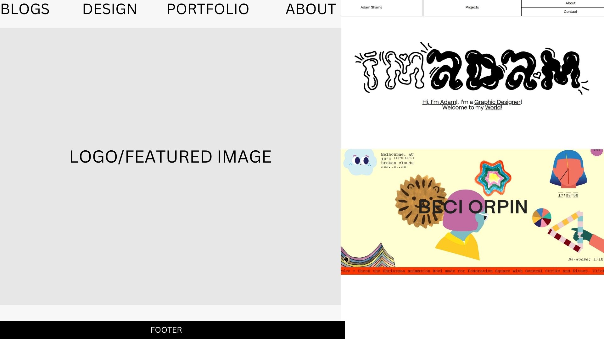

Style Guide and Design Process
- CONTENT: I have blogs, essays, designs and images and I believe every part of my website holds its own value, so I want to be conscious about the way that my content is presented. As an artist I believe the translation of my creativity into an online document where my audience can see the extent of said creativity as well as experience a smooth and efficient navigation of information is exciting.
- INTERFACE ELEMENTS: There are many interface elements that I plan on using for my web design. At the moment the wireframes I've drawn up make use of text fields, buttons, sliders, icons as well as breadcrumbs.
- BRAND LOOK/FEEL: Artsy, Soft, "Girly", Clean, Pretty, Unique
- COLOUR PALETTE: Here are a few colour palettes I'm thinking of incorporating:

- TYPOGRAPHY: In terms of typography I am yet to decide on the style I want to settle on, however I want whichever style I pick to be legible, stylish and minimalistic
Inspirations
Here are some sites that I visited for inspiration:
-
dontboardme
With this website I really liked the simple legible menu on top as well as the fact that the website is not too overcrowded with different elements. The colorscheme is minimalistic on the homepage which makes it easy on the eyes. However I'd change the large font and the size of the dog to allow for a more open feel.
Wireframes
- 